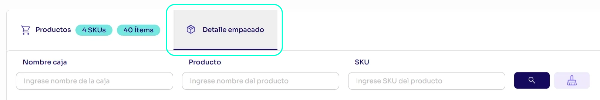
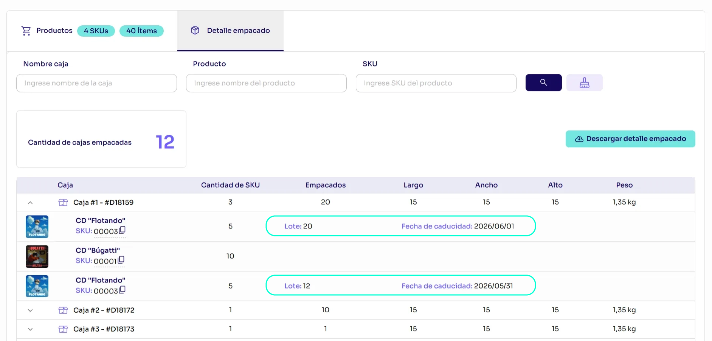

B2B
Lote y caducidad por producto en la sección de detalles de empaque en Órbita
Se habilita una nueva funcionalidad B2B que permite capturar y registrar la fecha de caducidad/vencimiento y el número de lote por producto durante el proceso de empaque. Esta información estará disponible para tu consulta.
Este VAS debe activarse únicamente cuando el seller necesite que esta información quede visible en el detalle del contenido de cada paquete de la orden.

Cuando la orden se encuentre en estado Empacado, podrás visualizar en el detalle del contenido de cada paquete los datos capturados.
